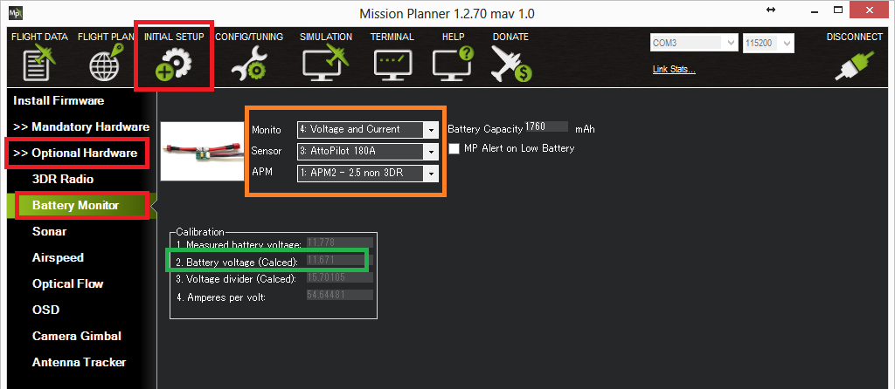

Archived Topic: Attopilot 180A Voltage and Current Sensor¶
In general it is best to use a power module specifically designed to work with autopilots but for cases where you need to measure over the voltage limit (i.e. > 18V) or current limit (i.e. > 90Amps) of the available power modules you may wish to use an AttoPilot 180A current and voltage module which can be purchased from Sparkfun.
Connection to Pixhawk¶
{kind=link}
Pixhawk/ to Attopilot 180A Voltage/Current Sensor Wiring Diagram¶
Connecting the autopilot sensor to the Pixhawk requires modifying a DF13 6 position cable as shown in the photo above including connecting:
V pin (voltage) to the Pixhawk’s 3rd pin from the left
I pin (current) to the Pixhawk’s 4th pin from the left
GND pin (ground) to the 1st pin on the left
Setup in Mission Planner¶
To configure the sensor go to the Mission Planner’s INITIAL SETUP > Optional Hardware > Battery Monitor page and set the “Monitor”, “Sensor” and “APM” fields as shown in the image below. If a battery is then connected you should see the “Battery voltage (Calced)” field become populated with the voltage of the battery.
{kind=link}
Note: Due to the voltage scaling of the sensor to 3.3V, the maximum current you can measure with the 180Amp sensor described here is actually 272Amps and for the smaller AttoPilot 90A sensor it is 136Amps.
Calibrating the voltage sensor¶
You can calibrate the voltage sensor to match the voltage from a hand-held volt meter by following the instructions on the power module calibration page here.